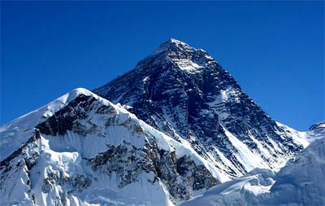
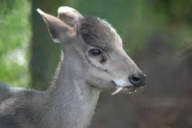

Get Info
Mt.Everest:
Pollution.
Formulas:
- (a-b)2=a2-2ab+b2
- C+O2→ CO2
Names of Prime Ministers of the Federal Democratic Republic of Nepal:
- Pushpa Kamal Dahal
- Madhav Kumar Nepal
- Jhala Nath Khanal
- Dr. Babu Ram Bhattarai
- Shushil Koirala
- K.P. Oli
Birds & Mammals in Nepal:
- Birds:
- Crane
- Pheasant
- Bengal Florican
- White Stork
- Great Hornbill
- Mammals:
- Red Panda
- Leopard
- Tiger
- Rhinoceros
- Musk Deer
Programming Languages:
- C++:
-
- C++ is the OOP language which was developed by Bjarne Stroustrup at AT&T Laboratories.
- C:
- C is the structural programming language developed by Dennis Rithche.
Image Gallery:
 
Visit:
- Mt.Everest
- Formulas
- Prime Ministers
- Bird & Mammals
- Programming Language
- Image Gallery